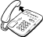
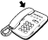
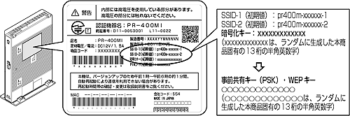

なお、本機能をご利用いただくためには、ひかり電話サービス契約が必要です。
・無線ネットワーク名（SSID）と暗号化設定
・無線ネットワーク名（SSID）の隠蔽（ANY接続拒否）
・無線LAN動作モード
|
● |
電話機からの暗号化設定により、「無線ネットワーク名（SSID）」、「暗号化方式」、「事前共有キー（PSK）」、「WEPキー」は上書きされます。 →すでに無線LAN接続されている機器がある場合、本商品と同じ設定に変更する必要がありますのでご注意ください。 |
|
1. |
ハンドセットを取りあげる | ||||||||||||||||||
|  | |||||||||||||||||||
| 2. | 電話機のダイヤルボタンを押す | ||||||||||||||||||
| 【無線LAN設定】 | |||||||||||||||||||
|
|||||||||||||||||||
|
|||||||||||||||||||
| 「設定が完了しました。」と音声ガイダンスが流れ、すべての設定値が反映されます。 | |||||||||||||||||||
| 3. | ハンドセットを置く | ||||||||||||||||||
|  |
| 無線ネットワーク名（SSID） | pr400m-xxxxxx-1 （xxxxxxは本商品のWAN側のMACアドレスの下6桁） |
| 無線の暗号化方式 | WPA-PSK/WPA2-PSK（TKIP/AES） |
| 事前共有キー（PSK） | ○○○○○○○○○○○○○ （○○○○○○○○○○○○○は、ランダムに生成した本商品固有の13桁の半角英数字） |
| 無線ネットワーク名（SSID） | pr400m-xxxxxx-2 （xxxxxxは本商品のWAN側のMACアドレスの下6桁） |
| 無線の暗号化方式 | WEP（128bit） |
| 使用するWEPキー （キーインデックス） |
WEPキー1 |
| WEPキー1 | ○○○○○○○○○○○○○ （○○○○○○○○○○○○○は、ランダムに生成した本商品固有の13 桁の半角英数字） |
- 事前共有キー（PSK）およびWEPキーをお客様自身で設定する場合、第三者に推測されにくいキーを登録してください。
また事前共有キー（PSK）、WEPキー、および品名紙記載の情報は、お客様にて厳重に管理してください。
WEPをご利用の際は、より強固なセキュリティとするためMACアドレスフィルタリングを併用してください。詳しくは「Web設定」-「無線LAN設定」の「MACアドレスフィルタリング」を参照してください。
- 電話機からWEP（128bit）に設定した場合、お客様自身で設定したWEPキー2 〜4は消去されますのでご注意ください。

- 電話機から設定する場合は、電話機の電話回線ダイヤル種別を「PB」に設定してください。（「PB」にできない電話機からは、設定できません。）電話機の電話回線ダイヤル種別の設定方法は、電話機の取扱説明書などをご覧ください。
- 設定を中止するにはハンドセットを置いてください。
- 1台の電話機で設定中に2 台目の電話機から設定することはできません。
- 間違った番号をダイヤルすると「設定に失敗しました。再度設定してください。」と音声ガイダンスが流れます。いったんハンドセットを置いて、初めから設定をやり直してください。
- 本商品のファームウェアの更新中や、本商品の再起動を行っている場合、当社のひかり電話設備の工事中、他の設定を実行中は、本商品の設定が行えません。
- 電話機からの設定を行うと、ひかり電話の通話や内線通話、着信音（着信中のナンバー・ディスプレイ表示など）、通信が途切れる場合があります。
- ひかり電話が使用できない場合は、電話機からの設定がご利用になれません。